Lab #3: Using KIE server API with an Angular UI
Task #1 - Modify Angular UI
- Make sure to stop and delete any running KIE containers. JBoss BPMS should be running.
- Git clone the BPMSTechExchangeRepoUI into business-central https://jhurlock@gitlab.consulting.redhat.com/americas-tech-exchange-2017/processapps-60/BPMSTechExchangeRepo.git
- Git clone the BPMSAngularWebAppUI project into a local directory https://jhurlock@gitlab.consulting.redhat.com/americas-tech-exchange-2017/processapps-60/BPMSAngularWebAppUI.git
- In the BPMSTechExchangeRepoUI project take a look at the InterviewProcess, the WorkExperience rule, and the Candidate Data Object to get an idea of how the process flows.
- Build and deploy the BPMSTechExchangeRepoUI project through Business Central.
- Create a KIE container and name it TechExchangeOrg2017:InterviewProj:1.0 Set the runtime strategy in the container Process Configuration to Per Process Instance. Start the container.
- Go to the BPMSAngularWebAppUI that you cloned in step 3. Run mvn clean install.
- After the BPMSAngularWebAppUI is successfully deployed to EAP open a browser and go to http://localhost:8080/AngularDynProj
- Use jboss for the user and bpms as the password. Click Login.
- After logging in navigate to Processes - InterviewProcess. NOTE: If the InterviewProcess does not display then refresh or stop and start the KIE container.
- Notice how the Package and Version of the process are blank. In the next few steps you’ll add them in and redeploy the BPMSAngularWebAppUI.
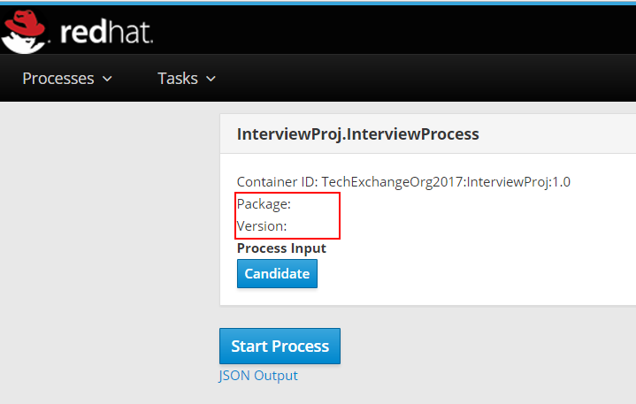 - Go to BPMSAngularWebAppUI/src/app/
- The file that you will need to edit to add in the Package and Version is Process.component.html. Take a look at how the Container ID is being set. That should give you an idea of how to set the Package and Version. The processDefinitions variable is defined in Process.component.ts. The REST request is also defined in Process.component.ts. For the full KIE server remote API go to http://localhost:8080/kie-server/docs/
- Once you have added in the appropriate JSON elements for the Pacakge and Version rebuild the BPMSAngularWebAppUI. mvn clean install
- Once the BPMSAngularWebAppUI project is successfully deployed reload http://localhost:8080/AngularDynProj and go to Processes - InterviewProcess. You should now see values for Package and Version.
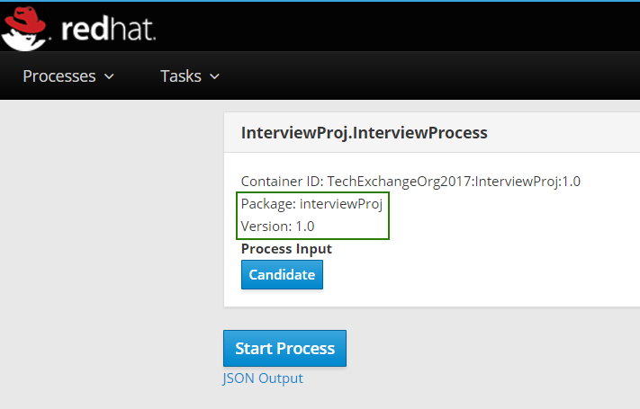 - Click on the Candidate button and fill out firstName, lastName, and enter a value > 5 in for yearsOfExperience. Click Start Process.
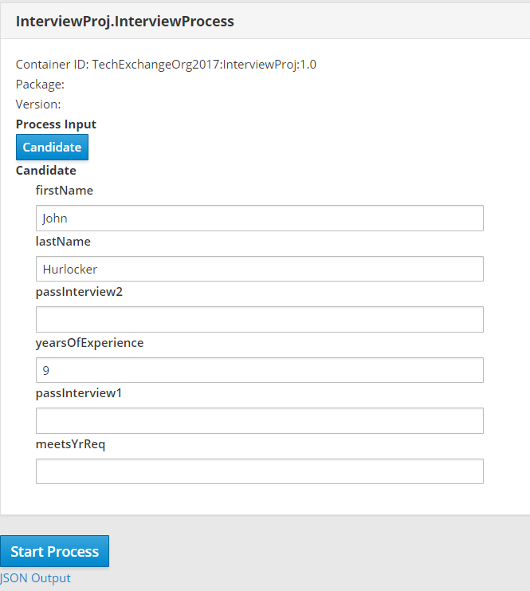 - Go to Tasks - Open Tasks. You should see an open task for Interviewer 1.
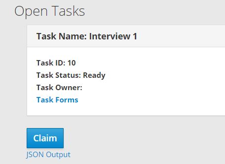 - Claim the task and notice that the owner will update to jboss. Start the task.
- Open the Task Forms link and click the Candidate button. Change the passInterview1 to true. Click Complete.
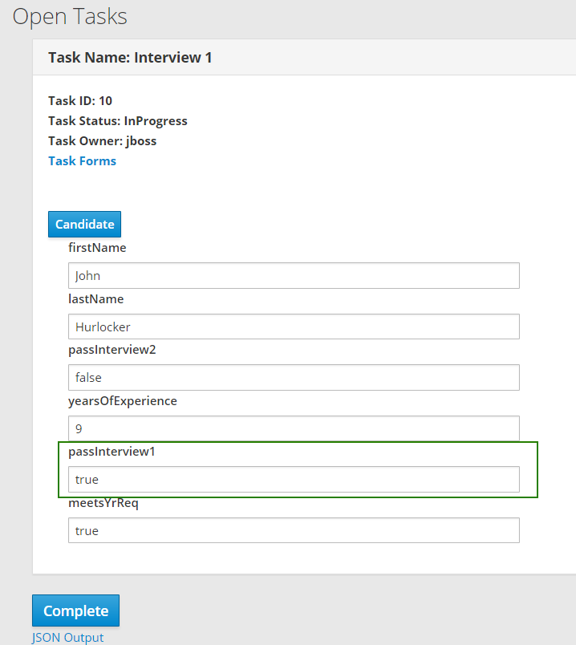 - The page should refresh and an Interview 2 task should now exist. Claim, Start, and Complete the task. This concludes Task #1 of this lab.
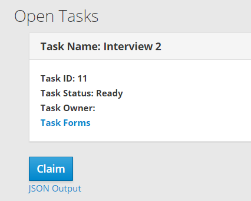
Task #2 - Create a new process and regenerate Angular UI
- In Business Central create a new Data Object named Expenses in the same package the Candidate data object is in.
- Add the following fields and Save the data object.
Identifier | Type |
firstName | String |
lastName | String |
expenseAmount | BigDecimal |
approved | boolean |
- Create a new process in the same package the InterviewProcess is in. Name the process ExpenseApprovalProcess.
- Add a Start event --> User Task --> End event
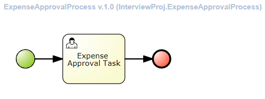 - Import the Expense data object into the ExpenseApprovalProcess
- Add a process variable named Expenses that is mapped to the Expenses data object
- On the User Task add Data Inputs and Outputs. Put Name, Data Type, and Source as Expenses.
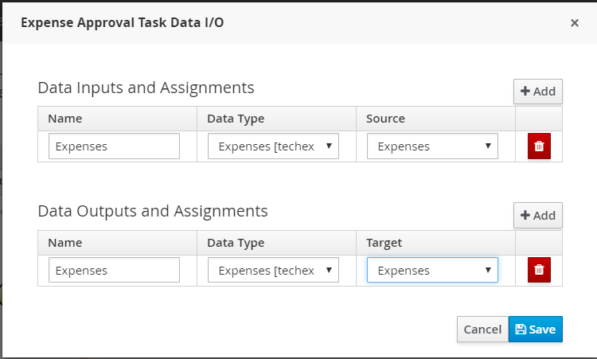 - Add jboss, busadmin in the Actors section of the User Task. Save the process.
- Undeploy the InterviewProj process deployment under Deploy - Process Deployments.
- Open the project editor and build and deploy InterviewProj.
- Stop and Start your KIE container (TechExchangeOrg2017:InterviewProj:1.0)
- Download the latest InterviewProj-1.0.jar from Authoring - Artifact Repository
- Git clone the BPMSAngularGeneratorUI project into a local directory. https://jhurlock@gitlab.consulting.redhat.com/americas-tech-exchange-2017/processapps-60/BPMSAngularGeneratorUI.git
- Go to the BPMSAngularGeneratorUI project and run the below command with appropriate values:
mvn exec:java -Dexec.mainClass=com.redhat.GenerateUI -Dexec.args="TechExchangeOrg2017:InterviewProj:1.0 '<PATH TO BPMSAngularWebApp>' '<PATH TO InterviewProj-1.0.jar>'" - Make sure EAP is still running and go to the BPMSAngularWebApp and run:
mvn clean install - Open a browser and go to http://localhost:8080/BPMSAngularWebApp
- You should now see the ExpenseApprovalProcess listed under the Processes drop down.
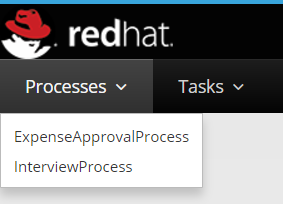 - Select the ExpenseApprovalProcess. You should see the new form that was generated to start the process instance.
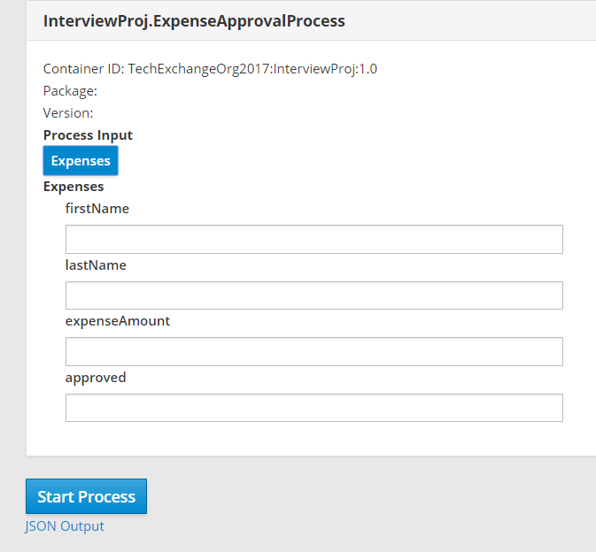 - Fill in fristName, lastName, and expenseAmount and click Start Process.
- Click on Tasks - Open Tasks and you should see a new task created. Claim, Start, and Complete the task. This concludes Task #2 of this lab.
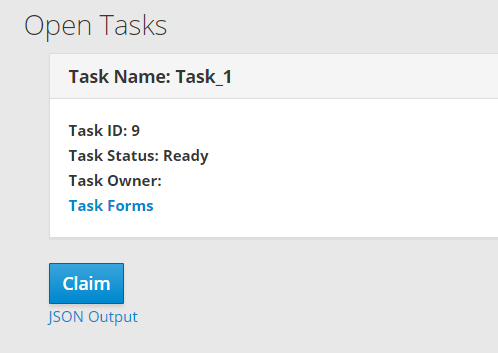